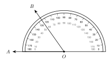
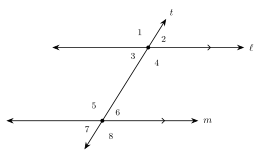

1. Write the symbol for the line through P and Q.
2. Write the symbol for the segment with endpoints M and N.
3. Write the symbol for the ray that starts at R and goes through S.
4. Classify an angle of 98° as acute, right, obtuse, or straight.
5. Find the angle between the hands of a clock at 11:00. Then classify it.
6. A figure shows ∠1 with a right angle mark. It shows ∠2 with no mark, but it looks square. Is ∠2 a right angle? Explain.
7. A is at −9 and B is at 4 on a number line. Find AB.
8. B is between A and C. AB = 4x + 1, BC = x + 8, and AC = 39. Find x, AB, and BC.
9. M is the midpoint of ST. SM = 5x − 4 and MT = 3x + 10. Find x and ST.
10. D is inside ∠ABC. m∠ABD = (2x + 9)°, m∠DBC = (4x − 3)°, and m∠ABC = 90°. Find x and each angle.
11. Ray BD bisects ∠ABC and m∠ABC = 148°. Find m∠ABD.

12. Find m∠AOB on the protractor.
13. Find the complement and the supplement of 64°.
14. Complementary angles measure (3x + 7)° and (2x + 3)°. Find x and the angles.
15. Vertical angles measure (6x − 7)° and (4x + 15)°. Find x and the angles.
16. A linear pair measures (5x + 8)° and (7x + 4)°. Find x and the angles.
17. Two lines cross. m∠1 = (2x + 14)° and m∠2 = (3x + 1)° are a linear pair. m∠3 = (5y)° is vertical to ∠1. Find x, y, and the three angles.
18. Dana has vertical angles (4x + 10)° and (6x − 20)°. She adds them, sets the sum equal to 180, and gets x = 19. What did she do wrong? Find the correct x.

19. Name the pair: ∠4 and ∠6.
20. Name the pair: ∠1 and ∠5.
21. ℓ ∥ m in the figure above and m∠1 = 122°. Find m∠6 and m∠8.
22. ℓ ∥ m. Alternate exterior angles measure (4x + 6)° and (6x − 14)°. Find x and the angles.
23. ℓ ∥ m. Same-side interior angles measure (5x + 9)° and (3x + 11)°. Find x and the angles.
24. A transversal makes corresponding angles of 115° and 118°. Are the two lines parallel? Explain.
25. Are the line through (0, 1) and (4, 3) and the line through (0, −2) and (6, 1) parallel?
26. A triangle has angles of 47° and 86°. Find the third angle.
27. The angles of a triangle are (3x + 4)°, (x + 30)°, and (2x − 10)°. Find x and each angle.
28. An isosceles triangle has a base angle of 72°. Find the angle at the top.
29. An exterior angle of a triangle is 125°. One remote angle is 48°. Find the other remote angle.
30. Find the angle sum of a regular 12-gon. Then find one angle.
31. Each exterior angle of a regular polygon is 20°. How many sides does it have?
32. A pentagon has angles 100°, 110°, 120°, 90°, and x°. Find x.
33. B is between A and C. AB = 2x + 1, BC = x + 8, and AC = 36. What is BC?
A. 9
B. 17
C. 19
D. 36
34. Two angles are complementary. One angle is 5 times the other. What is the measure of the smaller angle?
A. 15°
B. 18°
C. 30°
D. 75°
35. Two lines cross. Two vertical angles measure (3x + 12)° and (5x − 18)°. What is the measure of one of the other two angles?
A. 33°
B. 57°
C. 90°
D. 123°
36. ℓ ∥ m. Same-side interior angles measure (4x)° and (2x + 30)°. What is the measure of the larger angle?
A. 25°
B. 80°
C. 100°
D. 130°
37. The angles of a triangle are x°, (x + 20)°, and (x + 40)°. What is the largest angle?
A. 60°
B. 80°
C. 100°
D. 120°
38. The interior angles of a polygon add to 2340°. How many sides does the polygon have?
A. 15
B. 13
C. 14
D. 16
39. An exterior angle of a triangle measures 112°. One remote angle is 3 times the other. What is the larger remote angle?
A. 28°
B. 56°
C. 112°
D. 84°